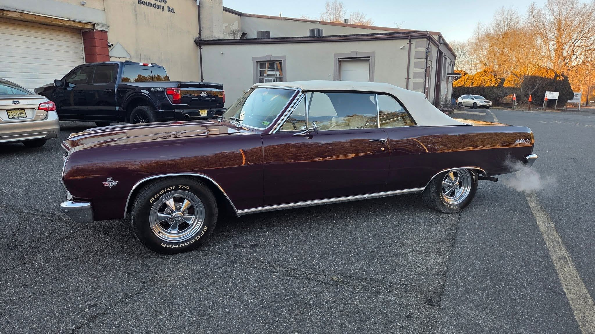

Restoring Automotive Legends with Precision & Passion
At Tristate Classic Car Restoration, we’re proud to bring top-tier car restoration in East Brunswick to classic car lovers, collectors, and enthusiasts. Whether you’re looking to revive an American muscle car, a rare European classic, or a timeless vintage vehicle, our expert team delivers meticulous craftsmanship and authentic results that preserve your vehicle’s legacy.
Comprehensive Automotive Restoration in East Brunswick
We specialize in full and partial automotive restoration in East Brunswick, offering custom solutions tailored to your vehicle’s condition, history, and your personal goals. From engine overhauls to factory-correct paint jobs, every detail is executed with care, experience, and a deep appreciation for automotive heritage.
Our full-service restoration shop provides:
- Frame-off and frame-on restorations
- Drivetrain, transmission, and suspension rebuilds
- Electrical system repairs and upgrades
- Rust removal and underbody protection
- Upholstery restoration and interior detailing
- OEM parts replacement or custom fabrications
Whether you’re building for show, resale, or pure personal enjoyment, our team is committed to excellence at every turn.
Expert Auto Body Shop Repair in East Brunswick
We’re not just about restorations we also offer professional auto body shop repair in East Brunswick for classic vehicles. If your vintage car has suffered dents, scratches, or collision damage, our auto body technicians can make it look like new again. With cutting-edge tools and time-honored techniques, we ensure your car’s bodywork is flawless.
Our auto body repair services include:
- Panel replacement and dent removal
- Paint matching and respraying
- Structural frame repair
- Chrome restoration
- Glass installation and trim refinishing
You won’t just see the difference you’ll feel it when you drive your restored classic back on the road.
Why Choose Us for Car Restoration in East Brunswick
When it comes to car restoration in East Brunswick, Tristate Classic Car Restoration stands out as the go-to shop for top-tier service and results. Here’s why customers trust us:
- Experienced Team: Our craftsmen have decades of hands-on experience with classic cars of all makes and models.
- Custom-Tailored Projects: Every restoration is designed around your vision, from custom features to period-correct authenticity.
- Superior Materials: We use high-quality parts and products to ensure longevity and superior performance.
- Transparent Communication: You’ll receive regular updates, photos, and progress reports so you’re always in the loop.
- Trusted Local Service: We proudly serve East Brunswick and surrounding areas with professional pickup and delivery options.
Frequently Asked Questions
What types of vehicles do you restore?
We specialize in a wide range of classic cars, including muscle cars, European imports, and rare vintage models.
Can I get only partial restoration or auto body work done?
Yes! We offer everything from full builds to auto body shop repair in East Brunswick for minor damage or cosmetic upgrades.
How much does a car restoration cost?
Costs vary by project size and car condition. Contact us for a personalized estimate for your automotive restoration in East Brunswick.
How long will my restoration take?
Timelines depend on complexity, parts availability, and the scope of work—but most full restorations take several months.
Ready to bring your dream car back to life?
Contact Tristate Classic Car Restoration today for expert car restoration in East Brunswick that blends passion, precision, and perfection.
